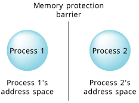

So why not just have one process with a zillion threads?
While some OSs force you to code that way, the advantages of breaking things up into multiple processes are many:
The ability to break the problem apart
into several independent
problems is a powerful concept.
It's also at the heart of QNX OS.
A QNX OS system consists of many independent modules, each with a certain
responsibility. These independent modules are distinct processes.
The people at BlackBerry QNX used this trick to develop the modules in isolation,
without the modules relying on each other.
The only reliance
the modules would have on each other is through
a small number of well-defined interfaces.
This naturally leads to enhanced maintainability, thanks to the lack of interdependencies. Since each module has its own particular definition, it's reasonably easy to fix one module—especially since it's not tied to any other module.
Reliability, though, is perhaps the most important point.
A process, just like a house, has some well-defined borders.
A person in a house has a pretty good idea when they're in the house, and
when they're not.
A thread has a very good idea—if it's accessing memory
within the process, it can live.
If it steps out of the bounds of the process's address space, it gets killed.
This means that two threads, running in different processes, are effectively
isolated from each other.

The process address space is maintained and enforced by QNX OS's process manager module. When a process is started, the process manager allocates some memory to it and starts a thread running. The memory is marked as being owned by that process.
This means that if there are multiple threads in that process, and the kernel needs to context-switch between them, it's a very efficient operation—we don't have to change the address space, just which thread is running. If, however, we have to change to another thread in another process, then the process manager gets involved and causes an address space switch as well. Don't worry—while there's a bit more overhead in this additional step, under QNX OS this is still very fast.